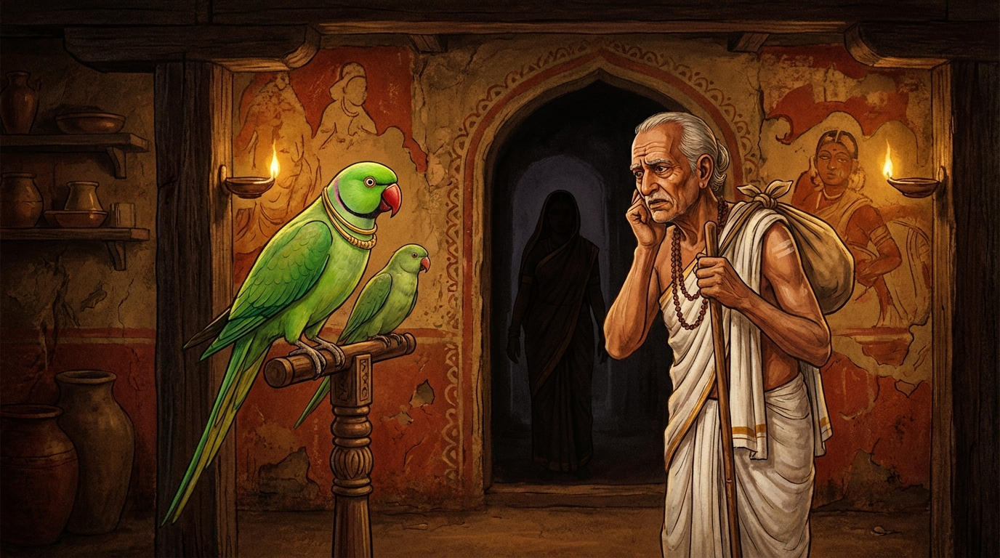

5. රාධ ජාතකය (145)
“රාධ, ඔබ නො දන්නෙහි” (න ත්වං රාධ විජානාසි) යන මේ ජාතක කථාව බුදුරජාණන් වහන්සේ ජේතවනාරාමයේ වැඩ වසන සමයෙහි, (එක්තරා භික්ෂුවකගේ) ගිහි කල බිරිඳගේ පෙළඹවීමක් අරබයා දේශනා කළ සේක. මෙහි වර්තමාන කතාව ඉන්ද්රිය ජාතකයේ සඳහන් වනු ඇත. බුදුරජාණන් වහන්සේ එම භික්ෂුව අමතා, “මහණ, ස්ත්රීන් නම් ආරක්ෂා කළ නොහැකි ජාතියකි. ආරක්ෂාව සලසා රැකීමට උත්සාහ කළත් ඔවුන් රැකගත නොහැක. ඔබ පෙරත් මේ ස්ත්රියට ආරක්ෂාව සලසා රැකීමට උත්සාහ කළ නමුත් එය කළ නොහැකි විය. දැන් කෙසේ නම් රකින්නේද?” යැයි වදාරා අතීත කතාව ගෙනහැර දැක්වූ සේක.
අතීතයේ බරණැස් නුවර බ්රහ්මදත්ත රජු රාජ්ය කරන සමයේ බෝධිසත්වයෝ ගිරා යෝනියෙහි උපන්හ. කාසි රටේ එක්තරා බ්රාහ්මණයෙක් බෝධිසත්වයන් සහ ඔහුගේ බාල සොහොයුරා පුත් තනතුරෙහි තබා පෝෂණය කළේය. ඔවුන් අතුරින් බෝධිසත්වයන්ගේ නම “පොට්ඨපාද” විය. අනෙක් ගිරවාගේ නම “රාධ” විය. නමුත් ඒ බ්රාහ්මණයාගේ භාර්යාව අනාචාරී වූ, දුස්සීල තැනැත්තියක් වූවාය. ඔහු වෙළඳාම පිණිස පිටත්ව යන විට සොහොයුරන් දෙදෙනා අමතා, “දරුවනි, ඉදින් තොපගේ මව වන බැමිණිය අනාචාරයේ හැසිරෙන්නේ නම්, ඇයව වළක්වන්න” යැයි කීවේය. බෝධිසත්වයෝ, “පියාණෙනි, මැනවි. වළක්වන්නට හැකි නම් වළක්වන්නෙමු. නොහැකි නම් නිහඬ වන්නෙමු” යැයි පැවසූහ. මෙසේ බ්රාහ්මණයා බැමිණියව ගිරවුන්ට භාර දී වෙළඳාම පිණිස ගියේය.
ඔහු ගිය දින සිටම බැමිණිය අනාචාරයේ හැසිරීමට පටන් ගත්තීය. නිවසට ඇතුළු වන්නන්ගේත්, පිටවන්නන්ගේත් කෙළවරක් නොවිය. ඇයගේ ක්රියා කලාපය දුටු රාධ බෝධිසත්වයන් අමතා, “අයියණ්ඩිය, අපගේ පියාණන් ‘ඉදින් තොපගේ මව අනාචාරයේ හැසිරෙන්නේ නම් ඇය වළක්වන්න’ යැයි පවසා ගියේය. දැන් මේ තැනැත්තිය අනාචාරයේ හැසිරෙයි. අපි ඇයව වළක්වමු” යැයි කීවේය. බෝධිසත්වයෝ, “දරුව, නුඹ තමාගේ ඇති අව්යක්ත බව නිසාත්, ළාමක බව නිසාත් මෙසේ කියන්නෙහිය. ස්ත්රියක් කර තබාගෙන ඇවිදිමින් රැකීමට උත්සාහ කළත්, ඔවුන් ආරක්ෂා කළ නොහැක. යම් ක්රියාවක් කළ නොහැකි නම්, එය කිරීම සුදුසු නැතැ”යි පවසා මෙම ගාථාව වදාළහ.
“රාධ, නුඹ නොදන්නෙහිය. මධ්යම රාත්රිය තවම පැමිණියේ නැත. කොසියායනිය (බැමිණිය) අප කෙරෙහි ඇල්ම දුරු කර (විරක්තව) ඇත. (එබැවින්) නුඹ නුවණ නැති බස් දොඩවන්නෙහිය.”
“රාධය, මධ්යම රාත්රිය එන්නට පෙරම කොතෙක් පුරුෂයෝ පැමිණියාහුදැයි ඔබ නොදන්නෙහිය. ඔබ අර්ථ රහිත වචන කියන්නෙහිය. බැමිණිය බමුණා කෙරෙහි ඇල්ම නැත්තියක වී ඇත.”
එහි න ත්වං රාධ විජානාසි, අඩ්ඪරත්තෙ අනාගතෙ යනු: ‘දරුව රාධ, නුඹ නොදන්නෙහිය. මධ්යම රාත්රිය එළඹෙන්නටත් පෙර, පළමු යාමයේදීම පමණක් මෙපමණ ජනකායක් පැමිණියහ. ඉතින් ඉදිරියට තව කොපමණ පිරිසක් පැමිණේවි දැයි කවුද දන්නේ?’ යන්නයි. අබ්යයතං විලපසී යනු: නුඹ නුවණ නැත්තෙකු (අව්යක්තයෙකු) සේ විලාප කියන්නෙහිය. විරත්තා කොසියායනෙ යනු: අපගේ මව වූ කෞශික ගෝත්රික බැමිණිය විරාගීව සිටියි; අපගේ පියාණන් කෙරෙහි ප්රේමයක් නැත්තී වී ඇත. ඉදින් ඇයට ඔහු කෙරෙහි ස්නේහයක් හෝ ප්රේමයක් තිබුණේ නම් මෙබඳු අනාචාරයක් නොකරන්නීය. යන මේ අර්ථය මෙම වචනවලින් ප්රකාශ කළේය.
මෙසේ ප්රකාශ කොට (බෝධිසත්වයෝ) රාධට බැමිණිය සමඟ කතා කිරීමට ඉඩ නොදුන්හ. ඇය ද බමුණා එන තුරු තමන් කැමති පරිදි හැසිරුණාය. බමුණා පැමිණ, “දරුව, තොපගේ මව කෙසේ වූවාදැ”යි පොට්ඨපාදගෙන් විමසීය. බෝධිසත්වයෝ බ්රාහ්මණයාට සියල්ල ඇති සැටියෙන් ප්රකාශ කොට, “පියාණෙනි, මෙබඳු දුස්සීල තැනැත්තියකගෙන් ඇති ඵලය කුමක්ද?”යි විමසා, “පියාණෙනි, අප විසින් මවගේ දෝෂය ප්රකාශ කළ මොහොතේ පටන් තවදුරටත් මෙහි විසිය නොහැක” යැයි පවසා බ්රාහ්මණයාගේ පාද වන්දනා කොට, රාධ සමඟ ඉගිලී වනයට ගියහ.

බුදුරජාණන් වහන්සේ මෙම ධර්ම දේශනාව ගෙනහැර දක්වා චතුරාර්ය සත්යය ප්රකාශ කළ සේක. සත්ය දේශනාව අවසානයේ (ශාසනය කෙරෙහි) කලකිරී සිටි භික්ෂුව සෝවාන් ඵලයෙහි පිහිටියේය. “එකල බමුණා සහ බැමිණිය වූයේ මේ යුවළමය. රාධ වූයේ ආනන්ද තෙරුන්ය. පොට්ඨපාද වූයේ මම ම වෙමි”යි වදාළ සේක.
පස්වන රාධ ජාතක වර්ණනාවයි.